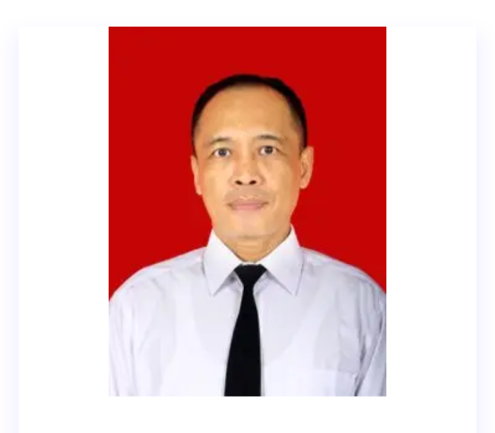
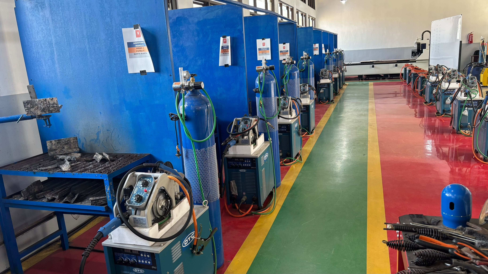
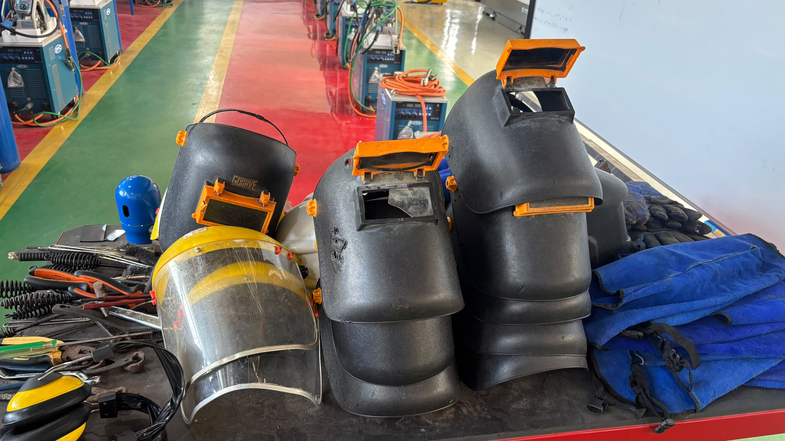
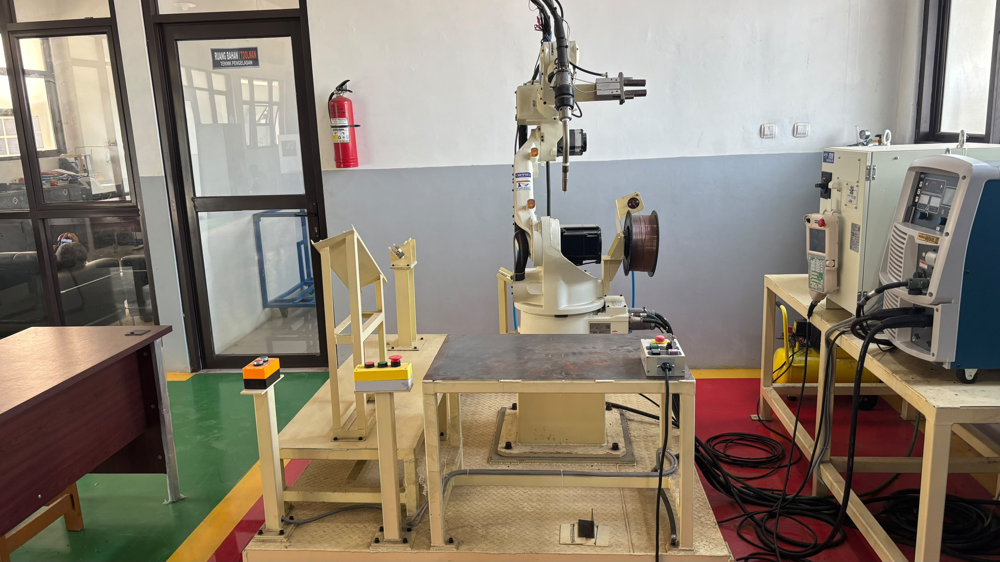

Teknik Pengelasan dan fabrikasi logam (TPFL)
Teknik Pengelasan dan fabrikasi logam (TPFL) di SMKN 1 Gantar adalah bidang keahlian dan peoses industri yang berfokus pada pengelolahan bahan logam mulai dari perancangan, pemotongan, pembentukan, penyambungan, perakitan, hingga penyelesaian
Profil Guru TPFL

Amarudin, ST.
Kaprodi TPFL
Materi Pembelajaran TPFL
- Dasar dasar K3LH dan keselamatan
- Gambar teknik dan perancangan
- Teknik pemotongan logam
- Teknik pembentuka logam
- Proses pengelolaan dasar dan lanjutan
- Metalurga las dan pemilihan material
Fasilitas Jurusan TPFL

Alat pengelasan

Alat Safty
